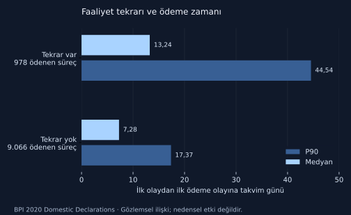

Süreç madenciliği · gerçek kurum olay günlüğü
Masraf onayında zaman nerede geçiyor?
10.500 yurt içi masraf sürecinde ödeme, tekrar ve bekleme yollarını birbirinden ayıran bir mevcut durum analizi.
English overview
Real institutional data: 10,500 cases and 56,437 events. Paid cases have a 7.41-day median time to payment; cases with repeated activities have 13.24 days. Findings are descriptive, with censoring and differing yearly coverage explicitly limited.
İş sorusu ve kaynak
BPI Challenge 2020 Domestic Declarations, bir üniversitenin seyahat masraf süreçlerinden anonimleştirilmiş gerçek olay günlüğüdür. Kaynak: Boudewijn van Dongen, 4TU.ResearchData, DOI 10.4121/uuid:3f422315-ed9d-4882-891f-e180b5b4feb5. Lisans CC BY-NC 4.0. Ham kişisel/organizasyonel alanlar rapora taşınmadı.
Soru: gecikme hangi geçişlerde yoğunlaşıyor, ret ve faaliyet tekrarları nasıl ilişkilendiriliyor, hangi süreçler için sonuç hakkında yeterli gözlem yok?
Yöntem ve veri kalitesi
XES kaydında 10.500 trace ve 56.437 olay yeniden sayıldı. Olaylar süreç içinde zaman damgasına göre sıralandı; 17 faaliyet ve 99 tam akış varyantı bulundu. Eksik faaliyet/tarih, boş süreç veya sıra dışı zaman sırası kontrolünde sorun bulunmadı. Bu kontroller iş kuralı uyumunu tek başına kanıtlamaz.
Ödeme zamanı, ilk olaydan ilk Payment Handled olayına kadar takvim günüdür. Faaliyet tekrarı, aynı faaliyet adının aynı süreçte birden çok geçmesidir; tek başına hata sayılmaz. Son olaya kadar gözlenen süre ayrı tutulur. 2017 ve 2018’in kurum kapsamı farklı olduğu için yıllar arası fark performans kazanımı/kaybı diye yorumlanmaz.
Bulgu: ödeme ve tekrar

| Grup | Süreç | Ödeme olayı olan | Medyan ödeme günü | P90 ödeme günü |
|---|---|---|---|---|
| Tümü | 10.500 | 10.044 | 7,41 | 20,15 |
| Faaliyet tekrarı var | 1.019 | 978 | 13,24 | 44,54 |
| Faaliyet tekrarı yok | 9.481 | 9.066 | 7,28 | 17,37 |
| 2017 başlangıçlı | 2.240 | 2.141 | 7,10 | 19,25 |
| 2018 başlangıçlı | 8.260 | 7.903 | 8,05 | 20,25 |
1.301 süreçte en az bir ret olayı var. Faaliyet tekrarı bulunan 1.019 sürecin tamamında ret de gözleniyor; fakat bu iki değişken aynı olayı ölçmüyor. Ret bulunan 282 süreçte faaliyet tekrarı yok. Ödeme olayı bulunmayan 456 süreç, “kesin ödenmedi” diye etiketlenemez: gözlem dönemi, taslak ve sonlandırma bilgisi ayrıştırılmalı.
Mevcut akış ve bekleme
En yaygın tam akış: çalışan gönderimi → idari onay → yönetici nihai onayı → ödeme talebi → ödeme işlemi. 4.618 süreç bu yolu izliyor. Bütçe sahibi onayının da bulunduğu ikinci yol 2.473 süreçte var. Bütçe sahibi ile yönetici aynı kişi olduğunda ayrı onay adımı zorunlu olmayabilir; atlanan adım otomatik uyumsuzluk sayılmaz.
| Doğrudan ardışık geçiş | Gözlem | Medyan takvim günü | P90 takvim günü |
|---|---|---|---|
| Ödeme talebi → ödeme işlemi | 10.037 | 3,24 | 4,91 |
| Bütçe sahibi onayı → nihai yönetici onayı | 2.788 | 1,91 | 6,72 |
| Nihai onay → ödeme talebi | 10.038 | 1,14 | 6,97 |
| İdari ret → çalışan ret kaydı | 928 | 0,92 | 5,04 |
Geçiş süreleri faaliyetler arası takvim farkıdır; aktif çalışma süresi değildir. Farklı geçiş gruplarının medyanları toplanarak süreç medyanı elde edilmez.
Kök neden hipotezi ve karar
Ödeme talebi sonrası 3,24 günlük medyan, ödeme partisi takvimini incelemek için güçlü bir adaydır; günlükte parti takvimi olmadığı için kesin kök neden değildir. Ret sonrası yeniden gönderim yolları da bilgi eksikliği hipotezini destekleyen aday akışlardır; eksik evrak nedenleri günlükte doğrudan ölçülmüyor.
- Önce ödeme talebi–ödeme işlemi kuyruğunu yaşa göre görünür yap; parti takvimi ve banka sonucu verisiyle hipotezi sınayıp sonra otomasyon kararı ver.
- Ret nedenini yapılandırılmış alan yap; ilk gönderim kalitesini ve yeniden gönderim oranını bölüm/tutar bazında izle.
- Pilot KPI: ödeme P90, nihai onay sonrası P90, ret sonrası tekrar oranı ve sonuç bilgisi eksik süreç oranı. Hedefler mevcut takvim ve kontrol kapasitesiyle birlikte belirlenir.
- Pilot başarısını benzer bölüm ve tutar segmentleri içinde değerlendir; kapsamı farklı iki yılı doğrudan karşılaştırma.
Uyum bulgusu ve sınırlar
Ödeme talebi sayısı 10.040, ödeme işlemi sayısı 10.044. Dört olaylık toplu fark, olayların birebir eşleştiğini kanıtlamaz; süreç bazlı istisna araştırması gerektirir. Son olay Payment Handled olan 10.043 süreç var; bir süreçte ödeme olayından sonra başka kayıt bulunuyor. Bu nedenle “son olay = ödeme” ile “herhangi bir ödeme olayı var” ölçümleri ayrıldı.
BPMN kaynak modelinde bilinmeyen onay koşulları açık karar noktaları olarak gösterilir; keşfedilen akış normatif politika değildir. Tutar/bölüm etkisi, iş günü takvimi ve gözlem sansürü bu sürümde modellenmedi. Bulgular tanımlayıcıdır; müdahalenin ne kadar süre kazandıracağını ölçmez.
Kaynaklar ve yeniden üretme
- 4TU: veri seti ve CC BY-NC 4.0 lisansı ↗
- TU/e: kapsam ve onay süreci açıklaması ↗
- IEEE: BPI 2020 çalışma bağlamı ↗
Alan bazlı referanslar, kaynak URL/hash manifesti, README, yöntem çıktıları ve çalıştırma komutları kaynak paketinde. Orijinal üçüncü taraf ZIP, XML, PDF ve olay günlüğü paketle yeniden dağıtılmıyor.